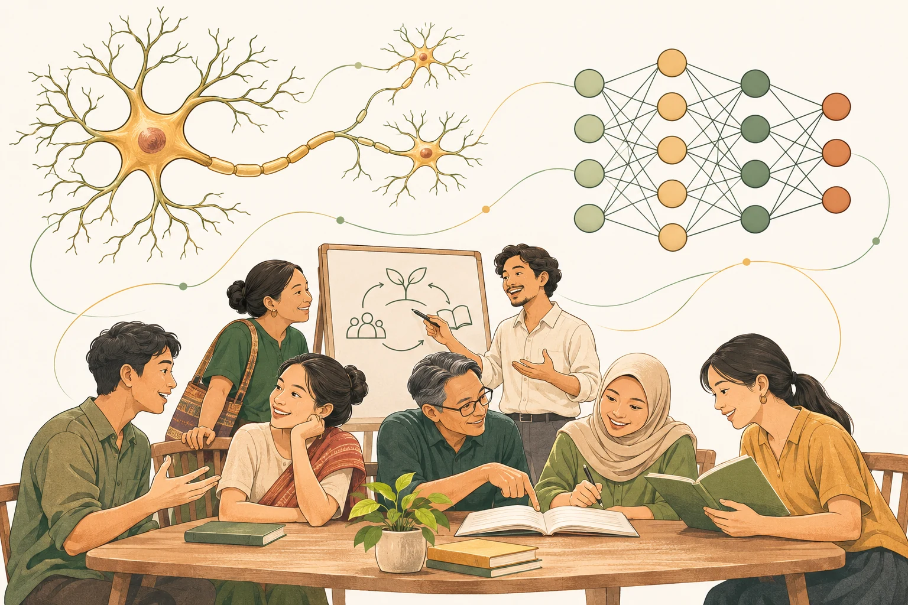

สมองและระบบประสาท
สมองสร้างไฟฟ้าอย่างไร
ดูภาพเคลื่อนไหวของเซลล์ประสาท การส่งสัญญาณข้ามไซแนปส์ และแผนที่สมองที่คลิกสำรวจได้
สำรวจไฟฟ้าในสมอง →สำรวจว่าสมอง ร่างกาย และประสบการณ์ทำงานร่วมกันอย่างไร เลือกเรื่องที่สนใจ แล้วค่อย ๆ เรียนรู้ในจังหวะของคุณ

เปรียบเทียบการฝึกเต้นสองระยะ คลิกดูหน้าที่ของส่วนต่าง ๆ และตามสัญญาณจากสมองไปยังกล้ามเนื้อทีละขั้น
เปิดภาพจำลอง 3 มิติ เริ่มจากระบบประสาทในชีวิตประจำวัน →ดูภาพเคลื่อนไหวของเซลล์ประสาท การส่งสัญญาณข้ามไซแนปส์ และแผนที่สมองที่คลิกสำรวจได้
สำรวจไฟฟ้าในสมอง →อ่านสรุปภาษาไทยเรื่องสมองกับ AI การเรียนรู้หลายชั้น และการแทนข้อมูล พร้อมลิงก์ไปยังคลิปต้นฉบับ
อ่านสรุปทั้ง 3 คลิป →